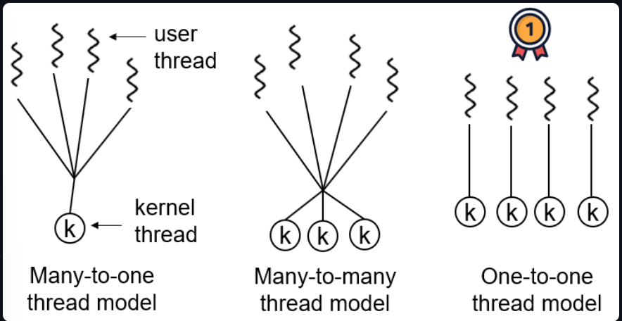

并发（上）
1 进程、线程概念
- Java中，启动
main函数时其实就是启动了一个JVM进程，main函数所在的线程就是这个进程中的一个线程，也称为主线程。 - 一个Java程序的运行是main线程和多个其他线程同时运行。
- 同类的多个线程共享进程的堆和方法区资源，但每个线程有自己的程序计数器、虚拟机栈和本地方法栈。
1.1 从JVM角度看进程和线程

- 线程是进程划分成的更小的运行单位。
- 进程是独立的，线程则不一定，因为同一进程中的线程极有可能会相互影响。
- 线程执行开销小，但是不利于资源的管理和保护；进程则恰好相反。
程序计数器为什么是私有的？
- 字节码解释器通过改变程序计数器来一次读取指令，从而实现代码的流程控制，如：顺序、循环；
- 多线程环境下，线程切换时，程序计数器用于记录当前线程执行的位置。
如果执行的是native方法，那么程序计数器记录的是undefined地址，只有执行Java代码时程序计数器记录的才是下一条指令的地址。
虚拟机栈和本地方法栈为什么是私有的？
- 虚拟机栈：虚拟机栈由一系列帧（
Frame）组成，每个方法调用都会创建一个帧，并将其推入虚拟机栈顶。每个帧包含了一个方法的局部变量表（Local Variable Table）、操作数栈（Operand Stack）、常量池引用等信息。 - 本地方法栈：与虚拟机栈作用相似，区别在于虚拟机栈为虚拟机执行Java方法服务，本地方方法栈为虚拟机使用到的Native方法服务。在
HotSpot中虚拟机栈和本地方法栈合二为一。
堆和方法区
堆和方法区是所有线程共享的资源。堆是进程中最大的一块内存，主要用于存放新创建的对象。方法区主要用于存放已被加载的类信息、常量、静态变量等数据。
2 Java线程和OS线程
JDK1.2 之前，Java线程基于绿色线程（Green Treads）实现，而不依赖于操作系统，是一种用户级线程。
JDK1.2 及之后，Java线程改为基于原生线程（Native Threads）实现，由操作系统内核进行线程的调度和管理。
用户线程创建和切换成本低，但不可以利用多核；内核态线程，创建和切换成本高，可以利用多核。
现在的Java线程本质其实就是操作系统的线程。
常见三种线程模型：
在Windows和Linux系统中，Java线程采用一对一的线程模型，Solaris系统 是一个特例，HotSpot VM在Solaris上支持多对多和一对一。
3 同步和异步的区别
同步：发出一个调用后，没有得到结果之前，该调用就不可以返回，一直等待。
异步：调用发出后，不用等待即返回结果，调用直接返回。
4 为什么要使用多线程
从总体上说：
- 从计算机底层：线程是轻量级的进程，是程序执行的最小单位，线程间的切换和调度的成本远远小于进程，多核CPU意味着多个线程可以同时运行，从而减少了线程上下文切换的开销。
- 从当代互联网发展趋势：多线程并发编程是开发高并发系统的基础，可以大大提高系统整体的并发能力以及性能。
从计算机底层来讨论：
- 单核时代：单核时代多线程可以提高CPU和IO系统的效率。从而提高了Java进程利用系统资源的整体效率。
- 多核时代：多核时代多线程可以提高进程利用多核CPU的能力。
5 多线程可能带来的问题
内存泄漏、死锁、线程不安全等。
6 如何理解线程安全和不安全
- 线程安全指的是在多线程环境下，对于同一份数据，不管有多少个线程同时访问，都能保证这份数据的一致性和正确性。
- 线程不安全表示在多线程环境下，对于同一份数据，多个线程同时访问时可能导致数据混乱、错误或者丢失。
7 单核CPU上运行多个线程效率一定会高吗？
CPU密集型线程主要进行计算和逻辑处理，需要大量的CPU资源；IO密集型线程主要进行输入输出操作，需要等待IO设备的相应，而不需要占用太多的CPU资源。
单核CPU上，同一时刻只能有一个线程在运行。
如果线程是CPU密集型的，多个线程同时运行时会竞争CPU资源，导致频繁的线程切换，增加了系统开销，降低了效率。
如果线程是IO密集型的，那么多个线程同时运行可以利用CPU在等待IO时的空闲时间，提高了效率。
8 Java线程的生命周期和状态
- NEW: 初始状态，线程被创建出来但没有被调用
start()。 - RUNNABLE: 运行状态，线程被调用了
start()等待运行的状态。 - BLOCKED：阻塞状态，需要等待锁释放。
- WAITING：等待状态，表示该线程需要等待其他线程做出一些特定动作（通知或中断）。
- TIME_WAITING：超时等待状态，可以在指定的时间后自行返回而不是像 WAITING 那样一直等待。
- TERMINATED：终止状态，表示该线程已经运行完毕。
- 在操作系统层面，线程有READY和RUNNING状态（READY的线程获得CPU时间片后就处于RUNNING状态）；而在JVM层面，只有RUNNABLE状态。
- 线程执行
wait()后，进入WAITING状态，需要依靠其他线程的通知才能够返回到运行状态。 TIMED_WAITING状态相当于在等待状态的基础上增加了超时限制，可以通过执行sleep(long millis)方法或者wait(long millis)方法将线程置于TIMED_WAITING状态，超时时间结束后，线程将会返回到RUNNABLE状态。- 当线程进入
synchronized方法/块，或者调用wait后（被notify）重新进入synchronized方法/块，但是锁被其它线程占有，这个时候线程就会进入BLOCKED（阻塞）状态。 - 线程执行完了
run()方法之后将会进入TERMINATED（终止）状态。
9 线程上下文切换
当出现如下情况时，线程将会从占用CPU状态中退出：
- 主动让出CPU，例如调用
sleep方法或者wait方法等。 - 时间片用完。
- 调用了阻塞类型的系统中断，比如请求IO、线程被阻塞。
- 被终止或者结束运行。
其中前三种将会导致线程上下文切换。
10 死锁
死锁的四个必要条件
- 互斥条件：该资源任意一个时刻只由一个线程占用
- 请求与保持条件：一个线程因请求资源而阻塞时，对已获得的资源保持不放。
- 不剥夺条件：线程已获得的资源在未使用完之前不能被其他线程强行剥夺，只有自己使用完毕后才释放资源。
- 循环等待条件：若干线程之间形成一种头尾相接的循环等待资源关系。
预防死锁
破坏四个必要条件。
避免死锁
在资源分配时，借助于算法（例如银行家算法）对资源分配进行计算评估，使系统进入安全状态。
11 sleep和wait方法的比较
共同点：都可以暂停线程的执行。
区别：
sleep()方法不释放锁，而wait方法释放锁。sleep通常用于暂停执行，wait通常用于线程间交互/通信。wait方法调用后，线程不会自动苏醒，需要其他线程调用同一个对象上的notify或者notifyAll方法。sleep方法执行完成后，线程会自动苏醒，或者使用重载的wait(long timeout)方法超时后线程会自动苏醒。sleep是Thread类的静态本地方法，wait则是Object类的本地方法。
12 为什么wait方法不定义在Thread中
每个对象（Object）都有对象锁，wait方法是让获得对象锁的线程等待，将会自动释放当前线程占有的对象锁并将其进入WAITING状态。因此要操作对应的对象（Object）而非当前的线程（Thread）。
sleep是让当前线程暂停执行，不涉及对象类，也不需要获得对象锁。
13 可以直接调用Thread类的run方法吗？
- 调用start方法，将会启动一个线程并使线程进入就绪状态，当分配到时间片后即开始运行。start会执行线程的相应准备工作，然后自动执行run方法。
- 直接执行run方法，将会把run方法当做一个main线程下的普通方法执行，而不会在某个线程中执行它，所以不是真正的多线程工作。
总结：调用start方法可启动线程并使线程进入就绪状态，直接执行run方法不会以多线程的方式执行。
14 JMM（Java内存模型）
15 volatile关键字
如何保证变量的可见性
可见性：每一个线程都保存了自己所使用的变量的副本，当修改某个变量的值时，不一定会立刻将修改写回主存，这就可能导致其他线程无法立即看到该变量的最新值，从而造成可见性问题。
volatile关键字可以保证变量的可见性，声明为volatile的变量将告诉JVM，这个变量是共享且不稳定的，每次使用它都需要到主存中进行读取。

volatile关键字最原始的意义是禁用CPU缓存。能保证数据的可见性，但不能保证数据的原子性，synchronized关键字既能保证可见性也能保证原子性。
如何禁止指令重排序
volatile关键字除了可以保证变量的可见性，还可以防止JVM的指令重排序。
volatile在对这个变量进行读写操作时候，会通过插入特定的内存屏障的方式来禁止指令重排序。
Java的unsafe类提供了三个内存屏障相关方法：
1 | |
理论上，通过这三个方法也可以实现和volatile禁止重排序一样的效果（只是会麻烦一些）。
双重校验锁实现对象单例（线程安全）：
1 | |
以上，uniqueInstance = new Singleton();这段代码其实分为三步执行：
- 为
uniqueInstance分配内存空间 - 初始化
uniqueInstance - 将
uniqueInstance指向分配的内存空间
由于JVM具有指令重排的特性，上述三步的执行顺序可能变成 1-3-2，这在单线程环境下没有问题，但在多线程环境下，可能导致线程获得一个还未初始化的实例：线程A执行了第一步和第三步后，线程B调用getUniqueInstance方法后发现uniqueInstance不为空，直接将未初始化的uniqueInstance返回。
volatile可以保证原子性吗
volatile可以保证变量的可见性，但是不能保证对变量的操作是原子性的。例如：
声明变量inc：
1 | |
声明方法对inc进行自增操作：
1 | |
inc++本身并不是原子操作，而是一个复合操作：
- 读取
inc的值 - 将
inc加1 - 将
inc的值写回内存
当多线程并发调用increase方法时，最后Inc的值往往小于预期。
可以使用synchronized关键字进行改进：
1 | |
16 乐观锁和悲观锁
- 悲观锁：共享资源每次只给一个线程使用，其它线程阻塞。Java中
synchronized和ReentrantLock等独占锁都是悲观锁思想实现。- 高并发场景下，激烈的锁竞争会造成线程阻塞，大量的上下文切换，增加系统的性能开销，还可能存在死锁。
- 乐观锁：认为共享资源每次被访问都不会出现问题，线程可以不停地执行，不需要加锁也不需要等待，只在提交修改的时候验证对应的资源是否被其它线程修改（版本号机制或
CAS算法）。- 不存在死锁问题，不存在锁竞争导致的线程阻塞，性能更高。
- 当写占比非常高的时候，将会导致频繁的失败和重试，影响性能。
16.1 乐观锁实现
版本号机制
一般是在数据表中加上一个数据版本号version字段，表示数据被修改的次数，当数据被修改的时候，version值加一。
线程A要更新数据时，读取数据的同时读取version值，提交更新结果时，对比刚刚读取到的version和数据库中的version值，当两者相等时执行更新，否则重试更新操作，直到成功（可以有效防止线程A覆盖线程B的更新）。
CAS算法
- 全称
Compare And Swap，应用更加广泛。 - 是一个原子操作，底层依赖于一条CPU原子指令。
- 思想：将预期值和要更新的变量值进行比较，两值相等时可以更新。
- V：
Var，要更新的变量值（旧值） - E：
Expected，预期值 - N：
New，新值 - 栗子：线程 A 要修改变量 i 的值为 6，i 原值为 1，则V = 1，E=1，N=6
- V：
- 多个线程同时使用CAS操作一个变量时，只有一个线程会成功，其它线程被通知失败，但并不会被挂起。
- java语言没有实现CAS，通过C++内联汇编的形式实现。
sun.misc包下的Unsafe类提供了compareAndSwapObject、compareAndSwapLong、compareAndSwapInt方法：
1 | |
16.2 乐观锁存在的问题
①ABA问题
描述：一个变量 V 初次读取的时候是 A 值，并且在准备赋值的时候检查到它仍然是 A 值，则不能说明V的值没有被其它线程修改过，因为在这段时间它的值可能被改为其他值，然后又改回 A，而 CAS 操作会误认为它从来没有被修改过。
解决：给变量追加版本号或者时间戳。例如AtomicStampedReference类（JDK1.5之后）就是用来解决ABA问题的，其中compareAndSet方法既要检查引用是否相同也要检查标志是否相同：
1 | |
②循环时间长开销大
CAS经常使用自旋操作进行重试，也就是不成功就一直循环执行直到成功，这将产生较大的CPU开销。
如果JVM能够支持处理器的pause指令，那么效率将会提升很多。
③只能保证一个共享变量的原子操作
CAS 只对单个共享变量有效，当操作涉及多个共享变量时 CAS 无法处理。
从JDK1.5 开始，可以借助AtomicReference类，将多个变量包装在一个对象里进行CAS操作，来保证引用对象之间的原子性。
17 synchronized关键字
synchronized关键字主要解决多个线程之间访问资源的同步性问题，可以保证被它修饰的方法或者代码块在任意时刻只能有一个线程执行。
17.1 使用synchronized
1、修饰实例方法（非静态方法）
给当前对象实例加锁，进入同步代码前需要获得当前对象实例的锁。
1 | |
2、修饰静态方法
给当前类加锁，会作用于类的所有对象实例，进入同步代码前需要获得当前class的锁。
1 | |
不难理解，一个线程A可以同时调用一个实例对象的非静态synchronized方法 以及 该对象所属类的静态synchronized方法。只要该线程同时获得对象锁和类锁即可。
3、修饰代码块
对括号中指定的对象/类加锁
1 | |
注意：尽量不要使用synchronized(String a)因为JVM中，字符串常量池具有缓存功能。
17.2 构造方法和synchronized
构造方法不能使用synchronized关键字修饰
而且，构造方法本身就是线程安全的。
17.3 synchronized底层原理
修饰同步代码块
1 | |
使用monitorenter和monitorexit指令实现。

通过字节码可以看到，同步代码块使用了一个monitorenter和两个monitorexit，monitorenter指明同步代码块开始位置，monitorexit指明结束位置。需要两个monitorexit是为了保证代码在正常执行及异常情况下都能被正确释放。
执行monitorenter指令，线程将尝试获取锁也就是获取对象监视器monitor的持有权。
在 Java 虚拟机(HotSpot)中，Monitor 是基于 C++实现的，由
ObjectMonitor实现的。每个对象中都内置了一个ObjectMonitor对象。另外，
wait/notify等方法也依赖于monitor对象，这就是为什么只有在同步的块或者方法中才能调用wait/notify等方法，否则会抛出java.lang.IllegalMonitorStateException的异常的原因。
如果锁的计数器为0则表示锁可以被获取，线程获取后将锁计数器加1；获取对象锁失败，当前线程阻塞等待，直到锁被另外一个线程释放。
对象锁的拥有者才可以执行monitorexit指令。执行后释放锁，将锁计数器设置为0，表明锁被释放。
修饰同步方法
1 | |
查看字节码可以发现，synchronized修饰的方法没有monitorenter和monitorexit指令，而是有一个ACC_SYCHRONIZED标识，指明该方法是一个同步方法，需要JVM执行相关的同步调用。
无论是修饰同步代码块还是同步方法，两者的本质都是对对象监视器monitor的获取。
17.4 JDK1.6之后的synchronized
Java 6之后，synchronized引入大量优化，例如自旋锁、适应性自旋锁、锁消除、锁粗化、偏向锁、轻量级锁等技术以减少锁开销，提升了synchronized锁的效率（在JDK 8中，偏向锁被彻底放弃）。
锁主要存在四种状态：无锁状态、偏向锁状态、轻量级锁状态、重量级锁状态，会随着竞争的激烈而逐渐升级。锁可以升级不可降级，这是为了提高获得锁和释放锁的效率。
17.5 synchronized和volatile区别
两者的关系通常认为是互补的。
volatile关键字是线程同步的轻量级实现，性能优于synchronized。volatile只用于变量而synchronized关键字可以修饰方法和代码块。volatile关键字能保证数据的可见性，但是不能保证原子性。synchronized关键字两者都能保证。volatile关键字主要用于解决变量的可见性问题，synchronized关键字解决线程之间的同步性问题。
18 ReentrantLock
ReentrantLock实现了Lock接口，是一个可重入且独占的锁。ReentrantLock和synchronized关键字类似，但更加灵活、强大，增加了轮询、超时、中断、公平锁和非公平锁等功能。ReentrantLock有一个内部类Sync，Sync继承自AQS(AbstractQueuedSynchronizer)，Sync有公平锁FairSync和非公平锁NonfairSync两个子类。ReentrantLock默认使用非公平锁，也可以通过构造器来显示的指定使用公平锁：
1
2
3
4// 传入一个 boolean 值，true 时为公平锁，false 时为非公平锁
public ReentrantLock(boolean fair) {
sync = fair ? new FairSync() : new NonfairSync();
}
18.1 公平锁和非公平锁的区别
- 公平锁：锁释放后，先申请的进程先得到锁，保证时间上的绝对顺序，上下文切换较为频繁。
- 非公平锁：锁释放后，按其他规则（例如优先级）来分配锁，而不是时间顺序。性能更好，但可能导致某些进程永远无法获得锁。
18.2 synchronized和ReentrantLock的区别
两者都是可重入锁
- 可重入锁：又称为递归锁，指的是线程可以再次获得自己已经持有的锁，而不会产生死锁。
- JDK 提供的所有现成的
Lock实现类，包括synchronized关键字锁都是可重入的。
synchronized依赖于JVM而ReentrantLock依赖于API
ReentrantLock需要手动加锁、解锁
synchronized关键字是自动进行加锁、解锁的，而ReentrantLock需要lock()和unlock()方法配合try/finally语句块来完成，来手动加锁、解锁。
ReentrantLock支持设置锁超时时间
ReentrantLock比synchronized增加了一些高级功能：- 等待可中断：通过
lock.lockInterruptibly可以使得正在等待的线程放弃等待，转而执行其他事情。 - 可实现公平锁：
synchronized只能是非公平锁，而ReentrantLock可以指定。 - 可实现选择性通知（锁可以绑定多个条件）：
synchronized关键字与wait()和notify()/notifyAll()方法相结合可以实现等待/通知机制。ReentrantLock类也可以实现，需要借助于Condition接口与newCondition()方法。
- 等待可中断：通过
Condition是 JDK1.5 之后才有的，它具有很好的灵活性，比如可以实现多路通知功能也就是在一个Lock对象中可以创建多个Condition实例（即对象监视器），线程对象可以注册在指定的Condition中，从而可以有选择性的进行线程通知，在调度线程上更加灵活。 在使用notify()/notifyAll()方法进行通知时，被通知的线程是由 JVM 选择的，用ReentrantLock类结合Condition实例可以实现“选择性通知” ，这个功能非常重要，而且是Condition接口默认提供的。而synchronized关键字就相当于整个Lock对象中只有一个Condition实例，所有的线程都注册在它一个身上。如果执行notifyAll()方法的话就会通知所有处于等待状态的线程，这样会造成很大的效率问题。而Condition实例的signalAll()方法，只会唤醒注册在该Condition实例中的所有等待线程。
18.3 可中断锁和不可中断锁的区别
- 可中断锁：申请锁的过程中可以被中断，不需要一直等到获取锁之后才能进行其他逻辑处理。例如
ReentrantLock。 - 不可中断锁：一旦线程申请了锁，就只能等到拿到锁以后才能进行其他逻辑处理。例如
synchronized。
19 ReentrantReadWriteLock（了解）
JDK1.8 中引入了性能更好的读写锁StampedLock
19.1 概念
ReentrantReadWriteLock 实现了 ReadWriteLock ，是一个可重入的读写锁，既可以保证多个线程同时读的效率，同时又可以保证有写入操作时的线程安全。
1 | |
- 一般锁默认是读读互斥、写写互斥、读写互斥
- 读写锁默认是读读不互斥、写写互斥、读写互斥
可以看到，ReentrantReadWriteLock其实是WriteLock和ReadLock两把锁。读锁是共享锁，可以同时被多个线程持有，写锁是独占锁，最多只能同时被一个线程持有。
- 共享锁：一把锁可以被多个线程同时获得。
- 独占锁：一把锁只能被一个线程获得。
和ReentrantLock一样，ReentrantReadWriteLock底层基于AQS实现。
和ReentrantLock完全一样，ReentrantReadWriteLock支持公平锁和非公平锁，默认使用非公平锁，可以通过构造器显示指定。
19.2 使用场景
读多写少的情况下，ReentrantReadWriteLock可以明显提升系统性能。
19.3 线程可以同时持有读锁和写锁吗？
- 有读锁时，不能再获取写锁（其实是因为，只要读锁被占用，写锁就不能获取，不论读锁是否是当前线程所持有）
- 有写锁时，该线程可以继续获取读锁（而当写锁不是当前线程占用时，获取读锁也会失败）。
19.4 读锁为什么不能升级为写锁？
- 写锁可以降级为读锁，但是读锁不能够升级为写锁，因为写锁是独占锁，读锁升级为写锁将会引起线程争夺，会影响性能。
- 可能导致死锁：两个线程的读锁同时想要升级为写锁，则需要双方都释放自己的锁，而两者都不释放，就会产生死锁。
20 StampedLock（了解）
JDK 1.8引入的性能更好的读写锁，不可重入，不支持条件变量Condition。
不同于一般的 Lock 类，StampedLock 并不是直接实现 Lock或 ReadWriteLock接口，而是基于 CLH 锁 独立实现的（AQS 也是基于这玩意）。CLH 锁是对自旋锁的一种改良，是一种隐式的链表队列。StampedLock 通过 CLH 队列进行线程的管理，通过同步状态值 state 来表示锁的状态和类型。
StampedLock 提供了三种模式的读写控制模式：读锁、写锁和乐观读。
- 写锁：独占锁，一把锁只能被一个线程获得。当一个线程获取写锁后，其他请求读锁和写锁的线程必须等待。类似于
ReentrantReadWriteLock的写锁，不过这里的写锁是不可重入的。 - 读锁 （悲观读）：共享锁，没有线程获取写锁的情况下，多个线程可以同时持有读锁。如果己经有线程持有写锁，则其他线程请求获取该读锁会被阻塞。类似于
ReentrantReadWriteLock的读锁，不过这里的读锁是不可重入的。 - 乐观读：允许多个线程获取乐观读以及读锁。同时允许一个写线程获取写锁。
StampedLock也支持这三种锁相互转换：
1 | |
StampedLock 在获取锁的时候会返回一个 long 型的数据戳，该数据戳用于稍后的锁释放参数，如果返回的数据戳为 0 则表示锁获取失败。当前线程持有了锁再次获取锁还是会返回一个新的数据戳，这也是StampedLock不可重入的原因。
20.1 StampedLock性能为什么更好
StampedLock乐观读允许一个写线程获取写锁，所以不会导致所有写线程阻塞，当读多写少的时候，写线程有机会获取写锁，减少线程饥饿的问题，大大提高吞吐量。
20.2 StampedLock适合的场景
读多写少，可以作为ReentrantReadWriteLock的替代品，性能更好。
但是，和ReentrantLock相比，不可重入，不支持Condition，对中断操作的支持也不够友好。